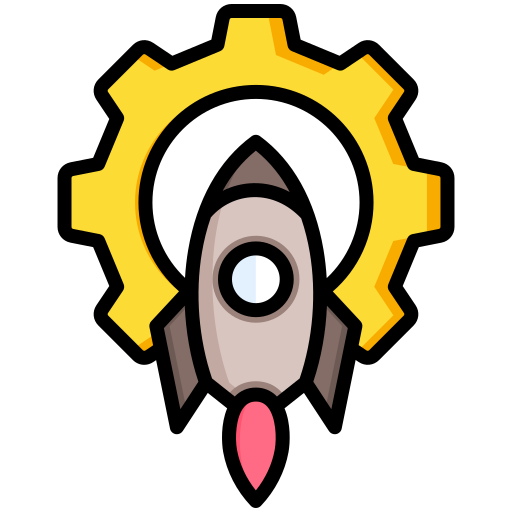

About me
"Just a 23-year-old guy into tech—came to Japan, enrolled in a programming course, and started chasing his dreams."
 Current Progress
Current Progress
I'm currently building my personal portfolio website to showcase:
- learning from E-Learning platform
- Hands-on projects from college
- A clear path of my career journey and growth in upcoming days
This site will also serve as a central hub for potential collaborators, recruiters, and future friends to learn more about me.
 Tech I Love
Tech I Love
I'm committed to learning and growing both personally and professionally.
- Currently Learning: Java, JavaScript (JS), PHP, MySQL, HTML, and CSS.
- Goals for Mastery: I want to master my current languages, especially Java and JavaScript.
- Future Learning Plans: I'm aiming to learn React, Node.js and explore other programming languages and framework.
I'm eager to gain experience and continue developing my skills.
 When I'm Not Coding/learning...
When I'm Not Coding/learning...
I enjoy:
- Playing video games to relax and recharge
- Listening music and vibe the rhythm and lyrics
- Exploring new technologies and keeping up with industry trends

Future Plans- Build a strong portfolio with real-world projects
- Contribute to open-source projects
- Land a full-time role as a full-stack developer
- Continue lifelong learning in both frontend and backend technologies